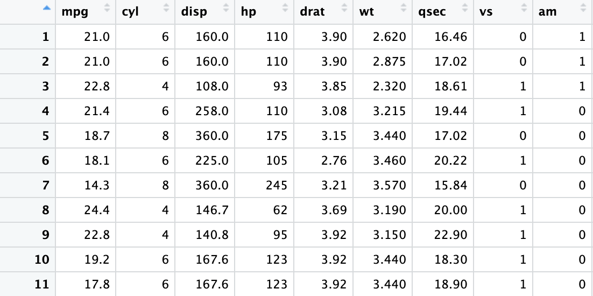

線性回歸筆記 2：普通最小平方法（Ordinary Least Squares, OLS）
0 估計式與估計值
在進入普通最小平方法（Ordinary Least Squares, OLS）之前，先把「估計」這件事的三個角色講清楚：
- Estimand（欲估參數）：母體（population）中我們真正想知道的參數。
- Estimator（估計式）：用樣本（sample）計算出來、用來猜 estimand 的函數；它本身是隨機變數。
- Estimate（估計值）：給定一份已經實現的樣本後，估計式算出來的具體數字。
估計的任務，就是設計一個「有根據的猜測」：用樣本資料構造 estimator，盡可能接近 estimand。
線性回歸中的 estimand 是什麼？
在筆記 1（母體版本）我們把線性回歸看成一個最佳線性預測（best linear predictor, BLP）問題：用 \(X\) 的線性函數去預測 \(Y\)。
令 \(X\) 為 \(k\times 1\) 隨機向量，\(Y\) 為隨機變數。
\[\begin{align*} Y,\quad X = \begin{pmatrix} X^1 \\ \vdots \\ X^k \end{pmatrix} \end{align*}\]
我們在母體中定義
\[\begin{align} S(\beta) := \mathbb{E}\big[(Y - X'\beta)^2\big], \qquad \beta := \arg\min_{\beta\in\mathbb{R}^k} S(\beta). \end{align}\]在這個角度下，線性回歸的 estimand 就是母體投影係數（projection coefficient）\(\beta\)。它是母體分配決定的非隨機量。
一般條件下，\(\beta\) 可以寫成：1
1 一般最小平方法
現在我們回到「樣本」的世界。假設我們從母體（population）中抽出一組隨機樣本（random sample）。直觀上，樣本就是母體隨機變數 \((Y, X)\) 的一組實現值（realization）。
樣本包含 \(n\) 筆觀察值：
\[\begin{align} (Y_1, X_1), \ldots, (Y_n, X_n). \end{align}\]
例如第 \(i\) 筆觀察值是 \((Y_i, X_i)\)。其中 \(Y_i\) 是一個標量，而 \(X_i\) 是 \(k\times 1\) 的向量：
\[\begin{align} Y_i \in \mathbb{R}, \qquad X_i= \begin{pmatrix} X_i^1\\ \vdots\\ X_i^k \end{pmatrix}. \end{align}\]
接下來我們再引入兩個常用記號。首先，將 \(X_iY_i\) 視為一個 \(k\times 1\) 的向量（因為 \(Y_i\) 是標量），它的樣本平均定義為
\[\begin{align} \underset{k\times 1}{\hat{\mathbf{Q}}_{XY}} := \frac{1}{n}\sum_{i=1}^n X_iY_i. \end{align}\]
再來，將 \(X_iX_i'\) 視為一個 \(k\times k\) 的矩陣，它的樣本平均定義為
\[\begin{align} \underset{k\times k}{\hat{\mathbf{Q}}_{XX}} := \frac{1}{n}\sum_{i=1}^n X_iX_i'. \end{align}\]
最小平方問題
延續母體版本的最佳預測問題 \(\min_\beta \mathbb{E}(Y-X'\beta)^2\) 。因為母體分佈未知，所以用樣本類比（sample analogues / plug-in principle）把期望換成樣本平均。
給定樣本 \(\{(Y_i, X_i)\}_{i=1}^n\)，定義樣本目標函數
\[\begin{align} \hat S(\beta) := \frac{1}{n}\sum_{i=1}^n (Y_i - X_i'\beta)^2, \qquad \hat\beta := \arg\min_{\beta\in\mathbb{R}^k}\hat S(\beta). \end{align}\]這個 \(\hat\beta\) 就是 OLS estimator；樣本實現後算出來的數字是 OLS estimate。
推導 OLS 估計式
為了推導，常把 \(n\) 倍的目標函數寫成平方和（sum of squared errors, SSE）：
\[\begin{align} \mathrm{SSE}(\beta) := \sum_{i=1}^n (Y_i - X_i'\beta)^2. \end{align}\]比較斜率係數的估計式：
與母體回歸的係數:
OLS估計式就是母體參數的樣本對應。
到這裡我們先暫停一下，釐清一個常見的困惑：\(\hat{\beta}\) 到底是什麼？
可以把它理解成「同一個符號，站在不同角度有不同身分」：
- \(\hat{\beta}\) 是最小平方法（least squares）問題的解（solution）：它讓平方殘差和最小。
- \(\hat{\beta}\) 是隨機樣本 \(\{(Y_i,X_i)\}_{i=1}^n\) 的函數。因為每一筆 \((Y_i,X_i)\) 都是隨機變數，所以由它們算出來的 \(\hat{\beta}\) 也必然是隨機變數（random variable）。
- \(\hat{\beta}\) 是母體投影係數 \(\beta\) 的估計式（estimator）。注意 \(\beta\) 是母體分配決定的參數，因此是非隨機（non-random）的。
- 一旦樣本已經實現（realized），把資料代入後得到的那個具體數字，就是 \(\beta\) 的估計值（estimate）：也就是我們用資料做出的猜測。
未來我們會討論估計式\(\hat \beta\)的性質時，都會將\(\hat \beta\)視為一個隨機變數。
2 OLS 殘差項
OLS 做完之後，會自然產生「擬合值」與「殘差」，它們在後續推導（例如 \(R^2\)、變異數估計）會一直出現。
\(e_i\) 和 \(\hat e_i\)有何不同？
\(e_i\) 和 \(\hat e_i\) 的差別在於：一個是「母體投影誤差」，另一個是「樣本殘差」。兩者看起來形式相近，但概念與可觀測性不同。
注意，投影誤差（error）\(e_i\) 定義為
\[\begin{align} e_i = Y_i - X_i'\beta, \end{align}\]
其中 \(X_i'\beta\) 是線性條件期望（linear conditional expectation）或最佳線性預測（best linear predictor, BLP）。因為 \(\beta\) 是母體物件，且 \(X_i'\beta\) 在一般情況下無法直接觀察（我們不知道母體的投影係數），所以 \(e_i\) 也就不可觀測。
相對地，殘差（residual）\(\hat e_i\) 是 \(Y_i\) 相對於樣本擬合值（fitted value）\(\hat Y_i\) 的偏離：
\[\begin{align} \hat e_i = Y_i - \hat Y_i = Y_i - X_i'\hat\beta. \end{align}\]
因為 \(\hat\beta\) 是用樣本資料算出來的，所以 \(\hat Y_i\) 與 \(\hat e_i\) 都是可觀測的。
之後我們會討論 OLS 估計式的變異數（variance）。理論上的變異數會牽涉到母體誤差 \(e_i\)；但在實作上，因為 \(e_i\) 看不到，我們通常用殘差 \(\hat e_i\) 來近似或估計誤差的大小。
以下是殘差項的一個種要性質：
這個性質可以把它看成母體性質 \(\mathbb{E}[Xe]=0\) 的樣本類比：母體投影誤差 \(e:=Y-X'\beta\) 與 \(X\) 正交；樣本殘差 \(\hat e\) 與樣本中的 \(X\) 也正交。
3 OLS 矩陣版本
到這裡為止，我們一直用「逐筆觀察值」的寫法（\(X_i, Y_i\)）。矩陣表示法會把這些疊起來，直接看出 OLS 的投影結構。
介紹矩陣表示法
把資料堆疊成
\[\begin{align} \mathbf{Y} := \begin{pmatrix} Y_1\\ \vdots\\ Y_n \end{pmatrix}\in\mathbb{R}^{n}, \qquad \mathbf{X}:= \begin{pmatrix} X_1'\\ \vdots\\ X_n' \end{pmatrix}\in\mathbb{R}^{n\times k}. \end{align}\]則 OLS 估計式可寫成3
\[\begin{align*} \mathbf{X}= \begin{pmatrix} X_1^1 & X_1^2&\cdots & X_1^k \\ \vdots &\vdots &\ddots & \vdots \\ X_n^1 & X_n^2 &\cdots & X_n^k, \end{pmatrix} \end{align*}\]
\(\mathbf{X}\)矩陣就是資料儲存在試算表中的樣子，只要回想自己使用Microsoft Excel的經驗就不會記錯了。

樣本平均可以用矩陣改寫：\[\begin{align*} \hat{\mathbf{Q}}_{XX}= \frac{1}{n} \sum_{i=1}^{n} X_i X_i' = \frac{1}{n} \mathbf{X}' \mathbf{X}\\ \hat{\mathbf{Q}}_{XY}= \frac{1}{n} \sum_{i=1}^{n} X_i Y_i = \frac{1}{n} \mathbf{X}' \mathbf{Y}. \end{align*}\]
因此我們可以用新定義的矩陣重新表達OLS估計式：
\[\begin{align} \hat\beta = (\mathbf{X}'\mathbf{X})^{-1}\mathbf{X}'\mathbf{Y}. \end{align}\]並且可以把「擬合值 + 殘差」寫成一行：
\[\begin{align} \mathbf{Y} = \mathbf{X}\hat\beta + \hat{\mathbf{e}}, \end{align}\]其中
\[\begin{align} \hat{\mathbf{Y}} := \mathbf{X}\hat\beta, \qquad \hat{\mathbf{e}} := \mathbf{Y}-\hat{\mathbf{Y}}. \end{align}\]4 OLS的幾何意義：線性投影
矩陣記號的一個重要好處，是它能把 的運作看成「投影（projection）」：\(\hat y=\mathbf{P}y\)，殘差 \(\hat u=\mathbf{M}y\)。不過要看懂這個幾何圖像，需要先熟悉兩個線性代數概念：欄空間與秩。
線性轉換（linear transformation）\(T\) 是一種線性函數，將向量空間 \(V\) 中的向量映射到另一個向量空間 \(W\)：
\[\begin{align} T: V \to W. \end{align}\]
投影（projection）是一種特別重要的線性轉換：它把向量 \(u\)「丟到」某個子空間（subspace）上，留下在該子空間方向上的成分。
為了建立直覺，我們先回顧高中學過的「投影到一直線」的情形。
一旦你把「投影」和「最小平方」連起來，就會發現： 的核心其實是幾何。
更精確地說，ols 的擬合值 \(\hat{\mathbf{Y}}=\mathbf{X}\hat{\beta}\) 是把 \(\mathbf{Y}\) 投影到 \(\mathbf{X}\) 的欄空間（column space）\(\mathrm{col}(\mathbf{X})\) 上的結果。也就是說，存在一個投影矩陣（projection matrix）\(\mathbf{P}\) 使得
\[\begin{align} \hat{\mathbf{Y}}=\mathbf{X}\hat{\beta}=\mathbf{P}\mathbf{Y}, \qquad \mathbf{P}:= \mathbf{X}(\mathbf{X}'\mathbf{X})^{-1}\mathbf{X}'. \end{align}\]
把 ols 估計式 \(\hat{\beta}=(\mathbf{X}'\mathbf{X})^{-1}\mathbf{X}'\mathbf{Y}\) 代回去，就得到 \[\begin{align} \mathbf{X}\hat{\beta}= \mathbf{X}(\mathbf{X}'\mathbf{X})^{-1}\mathbf{X}'\mathbf{Y}. \end{align}\]
對照高中「投影到一直線」的公式 \(\operatorname{Proj}_v u = v \frac{v'u}{v'v}\)，你會看到完全類似的結構：在多維情況下，\(\mathbf{X}\) 扮演「方向」的角色，而 \((\mathbf{X}'\mathbf{X})^{-1}\) 則扮演 \(\frac{1}{v'v}\) 的角色，負責把內積的尺度調整到正確的大小。
\(P\) 矩陣（projection matrix）
它把任意向量投影到 \(\mathrm{span}(\mathbf{X})\)（\(\mathbf{X}\) 的欄空間）上。特別地，
\[\begin{align} \hat{\mathbf{Y}} = \mathbf{X}\hat\beta = \mathbf{P}\mathbf{Y}. \end{align}\]條列 \(\mathbf{P}\) 的性質：
1.冪等（idempotent）：\(\mathbf{P}^2=\mathbf{P}\)
2. 對稱（symmetric）：\(\mathbf{P}'=\mathbf{P}\)
3.秩（rank）相同：\(\mathrm{rank}(\mathbf{P})=\mathrm{rank}(\mathbf{X})\)
直覺上：投影一次之後，再投影一次不會改變結果（所以冪等）。
\(M\) 矩陣（annihilator / residual-maker）
它把向量投影到 \(\mathrm{span}(\mathbf{X})\) 的正交補空間上。因此
\[\begin{align} \hat{\mathbf{e}} = \mathbf{Y}-\hat{\mathbf{Y}} = (\mathbf{I}-\mathbf{P})\mathbf{Y} = \mathbf{M}\mathbf{Y}. \end{align}\]條列 \(\mathbf{M}\) 的性質：
- 冪等：\(\mathbf{M}^2=\mathbf{M}\)
- 對稱：\(\mathbf{M}'=\mathbf{M}\)
- 消去 \(\mathbf{X}\)：\(\mathbf{M}\mathbf{X}=0\)（所以殘差對所有 regressor 正交）
- 互斥投影：\(\mathbf{P}\mathbf{M}=\mathbf{M}\mathbf{P}=0\)，且 \(\mathbf{P}+\mathbf{M}=\mathbf{I}\)
5 衡量擬合(Fit)的指標：R-squared
\(R^2\)（決定係數，R-squared）是在樣本內衡量「擬合程度」的指標。它把 \(Y\) 的變動分成「能被回歸解釋的部分」與「剩下解釋不了的部分」。
先定義三個平方和（都以「偏離樣本平均」為基準）：
- 總平方和（total sum of squares, TSS）
- 殘差平方和（residual sum of squares, RSS）
- 解釋平方和（explained sum of squares, ESS）
這一段把 \(R^2\) 放回「投影幾何」來理解：OLS 把 \(y\) 分解成「投影到回歸子空間的部分」與「剩下的殘差部分」，兩者互相垂直。
平方和分解與畢氏定理
畢氏定理：\(\|\mathbf{Y}\|^2 = \|\mathbf{P}\mathbf{Y}\|^2 + \|\mathbf{M}\mathbf{Y}\|^2\)
由
\[\begin{align} \mathbf{Y} = \mathbf{P}\mathbf{Y} + \mathbf{M}\mathbf{Y} \end{align}\]且 \(\mathbf{P}\mathbf{Y}\perp \mathbf{M}\mathbf{Y}\)（投影與殘差正交），得到「平方長度可分解」：
因為擬合向量 \(\hat y\) 與殘差向量 \(\hat u\) 正交（\(\hat y \perp \hat u\)），所以有畢氏定理
\[\begin{align} \|y\|^2 = \|\hat y\|^2 + \|\hat u\|^2. \end{align}\]
用投影矩陣 \(\mathbf{P}\) 與消去矩陣 \(\mathbf{M}\)（\(\mathbf{P}=\mathbf{X}(\mathbf{X}'\mathbf{X})^{-1}\mathbf{X}'\)，\(\mathbf{M}=\bI-\mathbf{P}\)）寫，就是
\[\begin{align} y'y = y'\mathbf{P}y + y'\mathbf{M}y. \end{align}\]
去均值與「總變異」（含截距的情形）
若模型包含截距，最自然的「總變異」是以樣本平均為中心來衡量。令
\[\begin{align} \bar y := \frac{1}{n}\mathbf 1'y, \qquad y_c := y - \bar y\,\mathbf 1. \end{align}\]
定義總平方和（total sum of squares）
\[\begin{align} \mathrm{SST} := \sum_{i=1}^n (y_i-\bar y)^2 = \|y_c\|^2 = y_c'y_c, \end{align}\]
以及殘差平方和（sum of squared errors）
\[\begin{align} \mathrm{SSE} := \|\hat u\|^2 = \|\mathbf{M}y\|^2 = y'\mathbf{M}y. \end{align}\]
在「含截距」的情況下，經典的平方和分解成立：
\[\begin{align} \mathrm{SST} = \mathrm{SSR} + \mathrm{SSE}, \end{align}\]
其中
\[\begin{align} \mathrm{SSR} := \sum_{i=1}^n (\hat y_i-\bar y)^2 \end{align}\]
是回歸所「解釋」的那部分平方和。
\(R^2\) 的定義與幾何意義
在含截距的情況下，定義
\[\begin{align} R^2 := 1-\frac{\mathrm{SSE}}{\mathrm{SST}}. \end{align}\]
它的幾何解釋很直接：
- \(\mathrm{SST}\) 是把 \(y\) 的平均成分拿掉後（去均值）的平方長度，也就是「均值中心化後的總變異」。
- \(\mathrm{SSE}\) 是把 \(y\) 投影到 \(\mathrm{col}(\mathbf{X})\) 之後，剩下那個殘差向量的平方長度。
所以 \(R^2\) 就是：回歸子空間能解釋掉的（均值中心化）變異比例。
**為什麼加入解釋變數會讓 \(R^2\) 上升？
加入新的解釋變數，會讓 \(\mathrm{col}(\mathbf{X})\) 變大（子空間擴張）。投影到更大的子空間，不可能讓殘差變長，因此
\[\begin{align} \mathrm{col}(\mathbf{X})\ \text{變大} \ \Rightarrow\ \mathrm{SSE}\ \text{弱下降} \ \Rightarrow\ R^2\ \text{弱上升}. \end{align}\]ow R^2 . \end{align}
Footnotes
Regularity condition：這組分解以「模型包含截距」為前提，等價於常數向量 \(\mathbf 1\in \mathrm{col}(\mathbf{X})\)，從而殘差對常數也正交（例如 \(\mathbf 1'\hat u=0\)）。↩︎
Regularity condition：假設 \(\sum_{i=1}^n X_iX_i'\) 可逆。直觀上是樣本中的解釋變數沒有完全共線性（no perfect multicollinearity）。↩︎
Regularity condition：假設 \(\mathbf{X}'\mathbf{X}\) 可逆，等價於 \(\mathbf{X}\) 的欄向量線性獨立（full column rank），也就是沒有完全共線性。↩︎